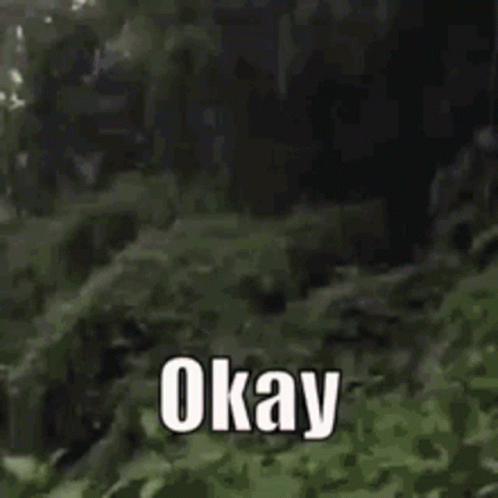
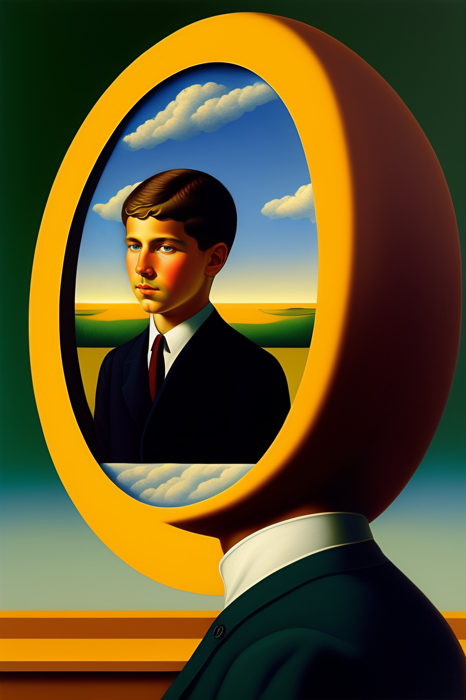
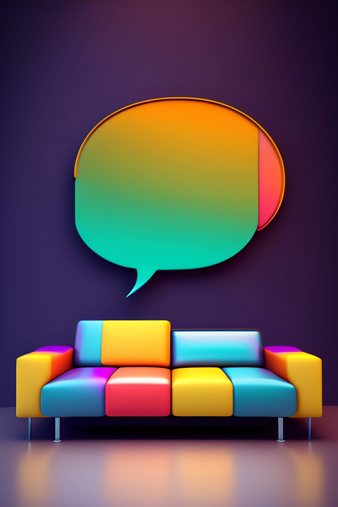

Greetings!
This is my first post on this site and I always tend to romanticize this shit!
I have created a website and a blog earlier but here I am again, stuck with what to write as part of my first post.
Oh! Here is an idea — “I can write a little bit about the purpose of this blog.” That seems like a good one. It will help me think about it as well because I have no clear clue why I am doing this at all in the first place!
In case you are wondering if this is all satire, then I must say that it is not! That is how I write. I sit in front of the keyboard, write whatever comes to mind, and edit stuff.
So, let me walk you through why I created this, and in the process think about it! Ok?!

The Idea
I want to have a personal web space where I can document various areas of my life and share them with the world.
Now, why on earth would I want to do that?!
To help!
Help who?!
Myself and others.
The myself bit is with certainty. I know that all of this will help me.
The others bit is with uncertainty. It depends on others. I will leave it to them. The idea is that, in the process of documenting things for myself, if it ends up helping others, then that would be great!
In case you missed it, you are one of the others. Satire stuff…ehem ehem!
So to summarize, I want to have a multi-purpose personal web space, where I can document and share my adventures as I go through the voyage of life.
Having this personal web space would enable me to capture meaningful moments from my life and store it for myself and for others who find them useful. Insights from the books I read, movies I watch, courses I take, trips I took, skills I learned, projects I have started, and so on.
Fine! Why Show It To The World?!
You can choose to document your life and keep it private. It is up to you. You don’t have to show it to the world. I am still uncomfortable with this idea. But I am slowly coming out of it. At this point, all I can do is redirect you to the people who have encouraged me in this business of documenting and sharing.
People Who Encouraged Me
Jeremy Howard & Rachel Thomas were the first ones to have encouraged me to share my work. In their deep learning course, they advised us to create a blog and document our learning journey. One of the pieces of advice is here. I created a blog a few months ago as part of documenting my deep learning journey.
Another person who encouraged me was Austin Kleon through his book Show Your Work. Just read that book, please!
Taking It Up Another Notch
A few weeks ago I thought of generalizing the advice given by Jeremy & Rachel and trying to see if I can apply it across other areas of my life as well apart from deep learning. And here we are!
When this idea occurred to me, I had a lil’ chat with one of the fast.ai students with whom I was in touch. Amazing guy! I remember telling him that going through this complete process of actually writing and finishing a blog post about something is far far better than some random idea that stays in the mind. Even if we begin writing it on a document, there is a high chance that it will stay unfinished. It is only if we take the responsibility of putting it on the internet for the world to see we polish it and in the process think about it deeply.
He agreed with me, gave a few tips, and encouraged me to go with it. Thanks, Forbo7!
The “Space”
Initially, I wanted this one blog to be that space, making it an all-in-one kind of a thing by posting everything ranging from data science learning journeys, to stories of my adventures trips, to the time when a monkey snatched my pizza slice, and so on. But it occurred to me that it would become very very chaotic in the future.
So instead, I thought of giving it a structure, and here is how I thought about it.
First, I thought about my life and the various areas it has! It was hard initially to think clearly about this kind of stuff. When I did this, it fucked me up! I was dividing my life into 1000 different fragments- educational life, professional life, social life, personal life, and within each of them a million lives again. It was a mess. I thought fuck this!
But the idea is always this dear- you must keep things simple. So I asked myself, “How can I keep this simple?”, and then it occurred to organize my life based on the activities that I am doing. That’s it! No meta-thinking about this stuff.
To elucidate this with an example, let us say there is a boy named Jimli. His life is as follows: During the day he goes to college, in the evening he goes to Salsa practice, and at night he works as a bartender in a cool place nearby. On weekends he goes to a gun shooting range. That is his life. Here is I would organize it based on my strategy:
- An area for college life that documents his academic journey
- An area for Salsa, documenting that
- A journal around life as a bartender
- An area for documenting his shooting practice
There will always be some personal life of his that will be happening. If he wishes to document that, or some parts of it he can add that as well.
Keeping all these 4 (or rather 5) things separate will keep things in organized manner. It will be helpful for the reader and will help Jimli inspect and think about each of these things closely.
My Space
Now, my life is not as cool as Jimli’s.
Right now the only important priority in my life is AI. That’s it! I am spending most of my time learning deep learning and I wish to build some cool AI stuff someday. Eventually, I wish to get a dream job in AI where I can build cool models that shape the future of technology. That way, I get to play my tiny role in the advancement of AI. I have just started and I know I have a long way to go.
So, that is one activity of mine.
- Learning AI
Apart from that, there will always be some aspect of my personal life happening- I might read some book or watch a movie or run 5k every morning or write this post, and so on.
Keeping all this in mind here is how I structured my “space(s)”
I created a common homepage, which by definition will feature a list of various activities of my life. Each activity has a separate website. Apart from that there will always be a “personal” site where I document stuff outside those activities.
- A place for documenting my deep learning journey: https://zed4zee.github.io/learning-ai
- A place for my personal stuff: https://zed4zee.github.io/personal
Within each of these sites, by default, there will be a Blog, that will allow me to document stuff. Apart from that based on the activity, there might be other sections on that page, for example, the deep learning site might have notes and projects.
Why A Blog?
Now to document stuff there are essentially 3 ways through which one can do it:
- Video
- Podcast
- Writing
I have personally chosen writing because I am comfortable with it and this is the style that comes naturally to me.
My Earlier Blogging Experience And…
I learned a lot in the process of creating and working on my earlier blog. I didn’t write much though but it was a good learning experience when it comes to creating websites and publishing them.
In my mind, psychologically, when I think of that blog, I do feel proud of myself but it is like this “student exercise” thingy of the past, something that I created to try stuff out. In my mind, I am not able to think beyond it and that is why I have created this new site.
Psychological bs is a bitch!
I am still on my way to finish the course and I have a long way to go. I have decided to document my deep learning adventures on the deep learning site I mentioned above.
Separating Myself & My ….
If I had something crazy for lunch, like a crab (it is crazy), and I share my experience of it, the key part that I want to share is the experience of eating a cab but not the fact that I ate a crab. There will be an underlying theme of the I, essentially, it is my experience.
I Wish I Knew About This Sooner

I am in my mid-20s at the moment of starting this, and if there was a list titled “List of things I should have started earlier in my life”, that, there would be this project I am starting (among many other things).
If I could go back in time, I would convince and encourage my younger self to start this sooner. My younger self did start something of this sort(so maybe I would tell him to stay consistent with it).
When I was 13, I was passionate about singing and had an immense love for Nasheeds. I remember creating and publishing a website back then, sharing my aspirations and goals around singing. What would you expect from a teenager who has got his hands on the internet?!
As for my past life, what is done is done! All I plan to do is recollect some stuff from my memory and try to archive it here. It won’t be fresh but whatever. As for my current ongoing life, I can start doing this now!
Social Media Platforms Aren’t My Thing

Now writing can be done on various platforms. On one hand, there are writing platforms like Medium and Quora, and on the other hand, there are social media platforms like Twitter, LinkedIn, and so on.
To keep my vanity in check, I don’t want to use any of these platforms for documenting and sharing my work. It is very easy for me to get bothered about various social media metrics like “the number of followers”, “likes”, and so on. At the moment I am not someone who can handle all this stuff. I know people who genuinely don’t get affected by these things. I am not one of them. Moreover, the reasons why I am doing all this has got nothing to do with making big on the internet or becoming a content creator, the latter requires a lot of hard work.
I want to be comfortable in my own space away from the chaos and just share stuff. A personal website seems like the best go-to option.